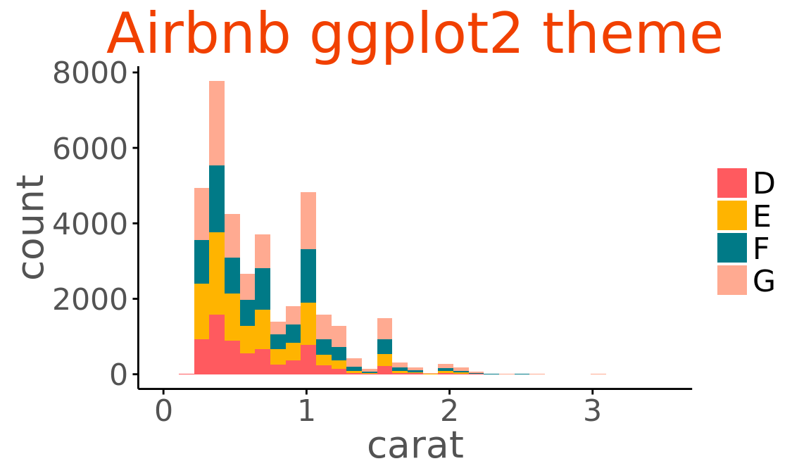
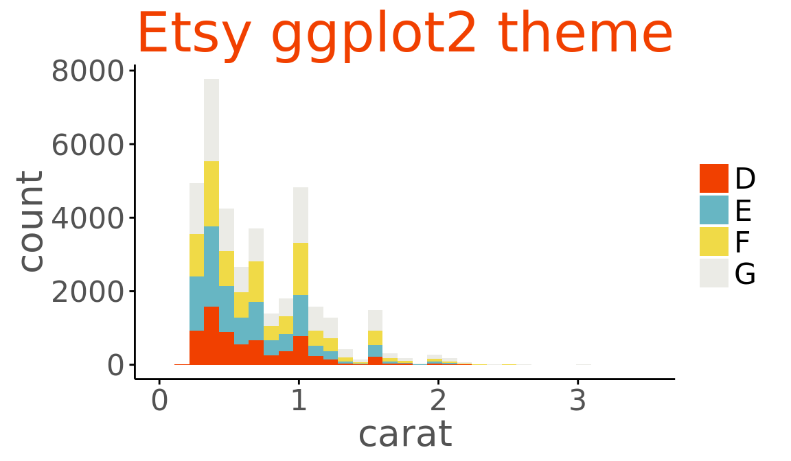
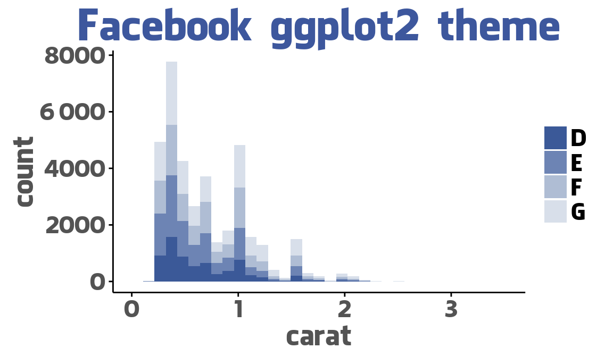
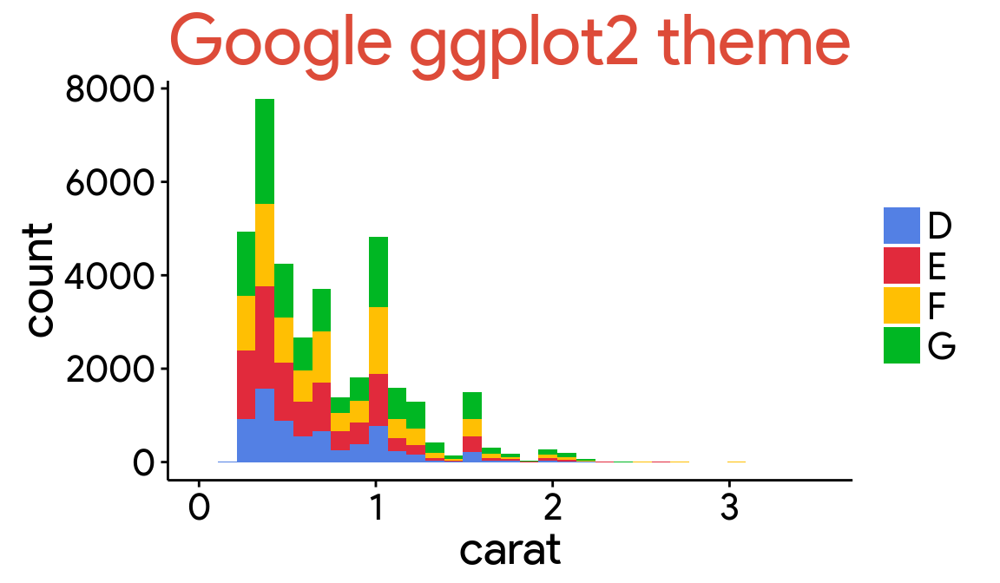
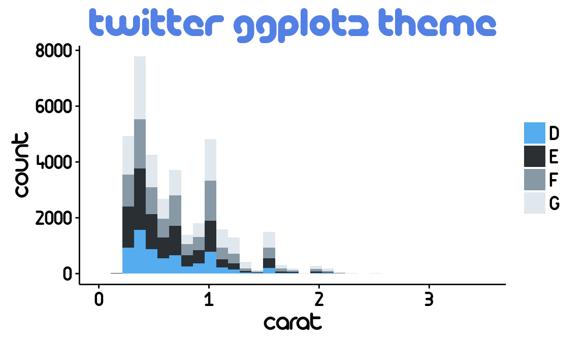
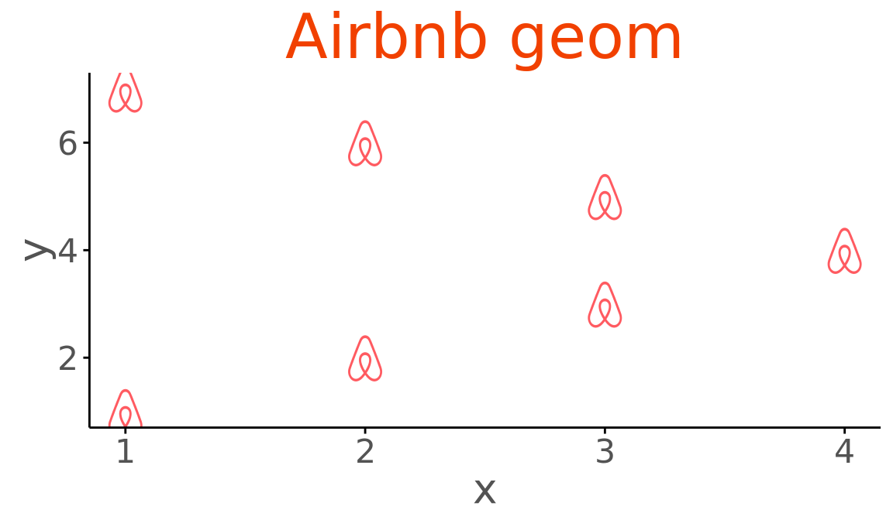
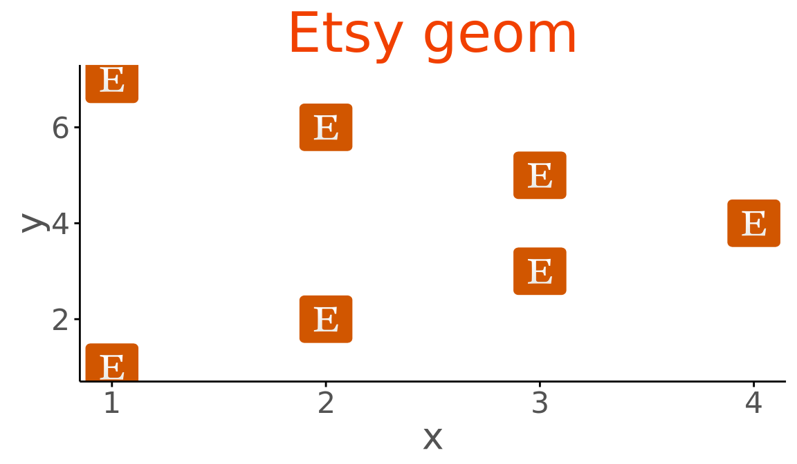
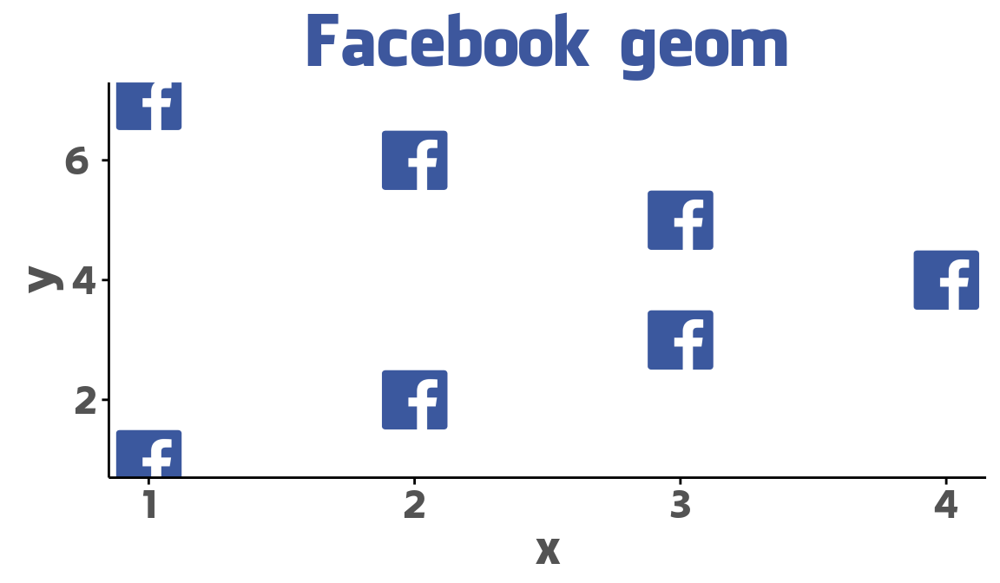
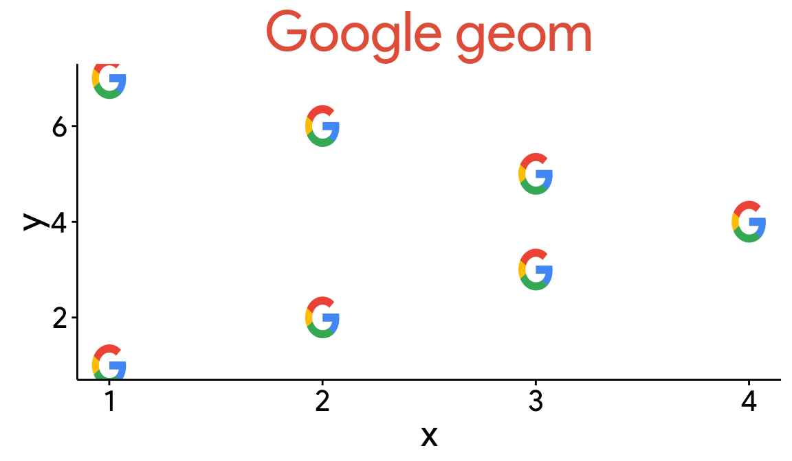
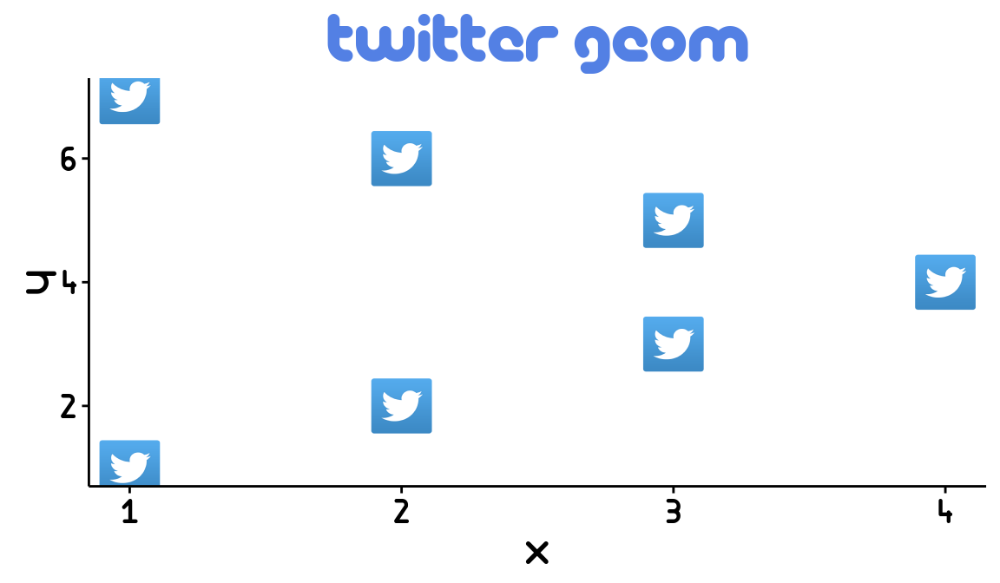

Make ggplot interactive
Horizontal versions of ggplot2 geoms
Extra coordinate systems, geoms & stats
Accelarating ggplot2
Repel overlapping text labels
Plot graph-like data structures
Miscellaneous extensions to ggplot2
Network visualizations in ggplot2
Marginal density plots or histograms
Create easy animations with ggplot2
Interactive ROC plots
ggplot themes and scales
Extensions for radiation spectra
Geoms to plot networks with ggplot2
ggplot2 tech themes, scales, and geoms
radar charts with ggplot2
Time series visualisations
A phylogenetic tree viewer
Seasonal adjustment on the fly
https://github.com/ricardo-bion/ggtech
ggplot2 tech themes, scales, and geoms.
# Example from https://github.com/ricardo-bion/ggtech
library(ggplot2)
library(ggtech)
# Make sure to install the required fonts
# (instructions at the end of this file).
d <- qplot(carat, data = diamonds[diamonds$color %in%LETTERS[4:7], ], geom = "histogram", bins=30, fill = color)Tech themes and scales:
d + theme_tech(theme="airbnb") + ggtitle("Airbnb ggplot2 theme") + scale_fill_tech(theme="airbnb")
d + theme_tech(theme="etsy") + ggtitle("Etsy ggplot2 theme") + scale_fill_tech(theme="etsy")
d + theme_tech(theme="facebook") + ggtitle("Facebook ggplot2 theme") + scale_fill_tech(theme="facebook")
d + theme_tech(theme="google") + ggtitle("Google ggplot2 theme") + scale_fill_tech(theme="google")
d + theme_tech(theme="twitter") + ggtitle("Twitter ggplot2 theme") + scale_fill_tech(theme="twitter")
Tech geoms, inspired by emoGG.
d2 <- data.frame(x = c(1:4, 3:1), y=1:7)ggplot(aes(x,y), data=d2) +
geom_tech(size=0.25, theme="airbnb") +
theme_tech("airbnb") +
ggtitle("Airbnb geom")
ggplot(aes(x,y), data=d2) +
geom_tech(size=0.15, theme="etsy") +
theme_tech("etsy")+
ggtitle("Etsy geom")
ggplot(aes(x,y), data=d2) +
geom_tech(size=0.15, theme="facebook") +
theme_tech("facebook")+
ggtitle("Facebook geom")
ggplot(aes(x,y), data=d2) +
geom_tech(size=0.25, theme="google") +
theme_tech("google" ) +
ggtitle("Google geom")
ggplot(aes(x,y), data=d2) +
geom_tech(size=0.15, theme="twitter") +
theme_tech("twitter") +
ggtitle("Twitter geom")
You have to install the necessary fonts manually before using ggtech. Mofidy the destfile if you are using Windows or Unix.
## Facebook
download.file("http://social-fonts.com/assets/fonts/facebook-letter-faces/facebook-letter-faces.ttf", "/Library/Fonts/facebook-letter-faces.ttf", method="curl")
font_import(pattern = 'facebook-letter-faces.ttf', prompt=FALSE)
font_import(pattern = 'Lucida', prompt=FALSE)
## Google
download.file("http://social-fonts.com/assets/fonts/product-sans/product-sans.ttf", "/Library/Fonts/product-sans.ttf", method="curl")
font_import(pattern = 'product-sans.ttf', prompt=FALSE)
font_import(pattern = 'Roboto', prompt=FALSE)
## Airbnb
download.file("https://dl.dropboxusercontent.com/u/2364714/airbnb_ttf_fonts/Circular%20Air-Medium%203.46.45%20PM.ttf", "/Library/Fonts/Circular Air-Medium 3.46.45 PM.ttf", method="curl")
download.file("https://dl.dropboxusercontent.com/u/2364714/airbnb_ttf_fonts/Circular%20Air-Bold%203.46.45%20PM.ttf", "/Library/Fonts/Circular Air-Bold 3.46.45 PM.ttf", method="curl")
font_import(pattern = 'Circular', prompt=FALSE)
## Etsy
download.file("https://www.etsy.com/assets/type/Guardian-EgypTT-Text-Regular.ttf", "/Library/Fonts/Guardian-EgypTT-Text-Regular.ttf", method="curl")
font_import(pattern = 'Guardian-EgypTT-Text-Regular.ttf', prompt=FALSE)
## Twitter
download.file("http://social-fonts.com/assets/fonts/pico-black/pico-black.ttf", "/Library/Fonts/pico-black.ttf", method="curl")
download.file("http://social-fonts.com/assets/fonts/arista-light/arista-light.ttf", "/Library/Fonts/arista-light.ttf", method="curl")
font_import(pattern = 'pico-black.ttf', prompt=FALSE)
font_import(pattern = 'arista-light.ttf', prompt=FALSE)